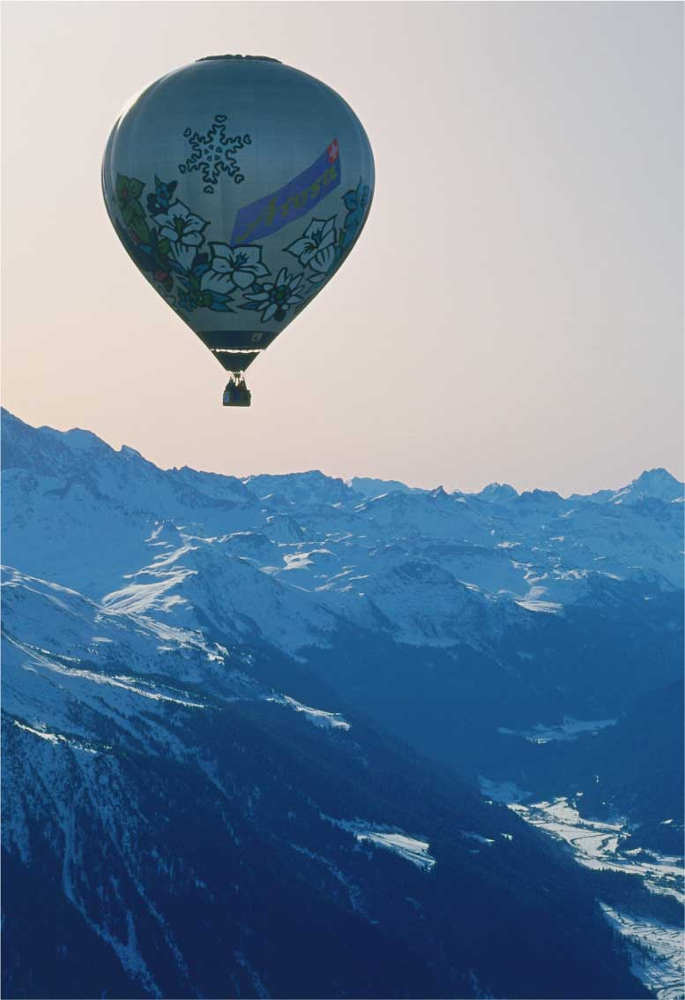

The DAILY Mantra
"Imagination is like a lofty building
reared to meet the sky - fancy is a
balloon that soars at the wind's will."
|
| - Frank Gelett Burgess |

Cannon Johns above
'die Alpen'
Read the B.E.C. interview with Sir Johns.

|
| FEATURED MEMBER: |
Cannon Johns,
born somewhere in
Switzerland in the summer
of 2002. The exact date
and circumstances of his
birth are unknown since he
was immediately placed in
a basket and tossed in a
river. Young Cannon rode
the pristine Alpine glacial
melt waters for hundreds
of miles before a young
Milanese woman discovered the basket along the banks of the river Po.
Some say it was this first early journey to Milan that fueled
his love for both exploration and fashion.
The woman would raise Cannon as her own, naming him Cannon after her
father and giving him the surname Johns to reflect
his Swiss heritage as well as his humility.
|
|
|
|
|
|
|
BALLOONIST
WORLD RECORDS
Cannon Johns
Awesomest Flight
Forthcoming
Jean-François Pilâtre de Rozier
François Laurent d'Arlandes
First Flight
November 21, 1783
Malcolm D. Ross
Highest Flight
May 4, 1961
Per Lindstrand
Richard Branson
First Pacific Crossing
January 15, 1991
Bertrand Piccard
Brian Jones
Longest Flight
March 21, 1999
Cannon Johns
Greatest Person
Eternity
Steve Fossett
First Solo Around the World
February 21, 1995 |
|